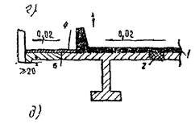
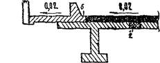
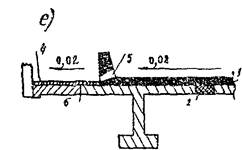
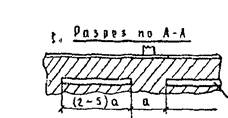
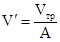
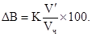
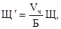
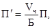

МИНИСТЕРСТВО ТРАНСПОРТНОГО СТРОИТЕЛЬСТВА СССР
ТЕХНИЧЕСКИЕ
УКАЗАНИЯ
ПО ПРОЕКТИРОВАНИЮ
И СООРУЖЕНИЮ ПРОЛЕТНЫХ СТРОЕНИЙ
АВТОДОРОЖНЫХ И ГОРОДСКИХ МОСТОВ
С ЖЕЛЕЗОБЕТОННОЙ ПЛИТОЙ
ПРОЕЗЖЕЙ ЧАСТИ ВЕЗ ОКЛЕЕЧНОЙ
ГИДРОИЗОЛЯЦИИ
ВСН 85-68
Минтрансстрой СССР
Утверждены
Техническим управлением
Министерства транспортного строительства СССР
4 ноября 1968 г. Приказ № 47
МОСКВА 1969
Проведенные СоюздорНИИ исследования, изучение опыта зарубежных стран, результаты опытного строительства с 1953 г. и обследование состояния мостов, построенных без оклеечной гидроизоляции с 1900 г. по настоящее время, показывают, что практически необходимая долговечность некоторых типов пролетных строений может быть обеспечена без применения оклеечной гидроизоляции путем устройства плиты проезжей части из особо плотного бетона, улучшенного добавками, в монолитных и сборно-монолитных конструкциях или путем устройства выравнивающего слоя из такого же бетона или асфальтобетона специального состава в сборных конструкциях при условии выполнения определенных конструктивных и технологических требований, изложенных в настоящих «Технических указаниях».
Настоящие «Технические указания» представляют собой второе переработанное издание «Технических указаний по проектированию и сооружению пролетных строений автодорожных и городских мостов с железобетонной плитой проезжей части без оклеечной гидроизоляции» (ВСН 85-63) Минтрансстроя СССР
Новый текст документа составлен на основе проведенного в 1965 г. широкого обследования мостов, построенных без оклеечной гидроизоляции и с оклеечной гидроизоляцией с учетом последнего отечественного и зарубежного опыта в этой области мостостроения. Обследованиями установлено, что в большом количестве мостов с гидроизоляцией проезжей части и без нее имеются следы разрушающего действия атмосферных вод и низких температур. Основная причина такого состояния - неудовлетворительные конструкция и исполнение сопряжения тротуарных блоков с проезжей частью, поэтому в настоящем тексте этому вопросу уделяется особое внимание.
Настоящие «Технические указания» составлены канд. техн. наук Н.А. Калашниковым с участием канд. техн. наук В.В. Носовского (гл. 3, приложения 2 и 3) и инж. Д.И. Гегелия (гл. 4 и приложение 5). Консультанты: заслуженный деятель науки и техники РСФСР д-р техн. наук профессор Е.Е. Гибшман и канд. техн. наук Е.Н. Козлова. В «Технических указаниях» учтены замечания проектных и строительных организаций.
Замечания и предложения по настоящим «Техническим указаниям» просьба направлять по адресу: Московская обл., Балашиха-6, СоюздорНИИ.
Директор СоюздорНИИ д-р техн. наук В.В. Михайлов
|
Министерство транспортного строительства СССР |
Ведомственные строительные нормы |
ВСН 85-68 Минтрансстрой СССР Взамен ВСН 85-63 |
|
Технические указания по проектированию и сооружению пролетных строений автодорожных и городских мостов с железобетонной плитой проезжей части без оклеечной гидроизоляции |
1.1. «Технические указания» распространяются на проектирование пролетных строений автодорожных и городских мостов с железобетонной плитой проезжей части без оклеечной гидроизоляции, а также на сооружение этих пролетных строений по проектам, разработанным (или переработанным) с учетом настоящих «Технических указаний» и согласованным с заказчиком.
Постройка мостов с пролетными строениями без оклеечной гидроизоляции по проектам, разработанным без учета настоящих «Технических указаний» и не согласованным с заказчиком, запрещается.
1.2. Устройство железобетонной плиты проезжей части без оклеечной гидроизоляции допускается во всех климатических зонах СССР.
1.3. Устройство железобетонной плиты проезжей части без оклеечной гидроизоляции рекомендуется в пролетных строениях, у которых на верхней поверхности плиты или балок растягивающие напряжения от постоянно действующих факторов не превышают величины расчетного сопротивления бетона на растяжение Rp.
Без оклеечной гидроизоляции рекомендуется проектировать и строить пролетные строения:
разрезные плитные (сплошные или многопустотные) или балочные из обычного железобетона с маркой бетона не менее 300;
разрезные, неразрезные, консольные плитные (сплошные или многопустотные) или балочные из предварительно напряженного железобетона;
с предварительно напряженной в двух направлениях железобетонной плитой проезжей части (в том числе и на металлических пролетных строениях) мостов всех систем.
1.4. На пролетных строениях: предварительно напряженных с арматурой, укладываемой в верхней зоне сечения в открытых каналах; консольной и неразрезной систем из обычного железобетона; металлических со сборной железобетонной плитой проезжей части, не обжатой и не имеющей в стыках арматурных выпусков, а также на пролетных строениях, расположенных в районах с воздушной средой средней и сильной агрессивности для бетона особо высокой плотности*, устройство проезжей части без оклеечной гидроизоляции не допускается.
* Агрессивность воздушной среды для бетона нормальной плотности определяют в соответствии с указаниями СН 262-63. При повышении плотности на одну ступень соответственно на одну ступень снижается и степень агрессивности.
Бетоны, удовлетворяющие требованиям настоящих Указаний, относятся к бетонам особо высокой плотности, соответствующим по водонепроницаемости марке В-8.
|
Внесены Государственным Всесоюзным дорожным научно-исследовательским институтом (СоюздорНИИ) |
Утверждены |
Срок введения
|
1.5. При строительстве мостов без оклеечной гидроизоляции на проезжую часть сборных железобетонных пролетных строений или стальных со сборной железобетонной плитой укладывают выравнивающий слой, обеспечивающий необходимую ровность поверхности сборных конструкций и выполняющий роль гидроизоляции и покрытия.
В железобетонных и сталежелезобетонных пролетных строениях с плитой проезжей части, бетонируемой на месте, выравнивающий слой не устраивают. В этом случае проезд транспорта осуществляется непосредственно по бетону плиты, которая должна проектироваться и изготовляться с учетом требований настоящих «Технических указаний».
1.6. Выравнивающий слой, а также плиту, бетонируемую на месте, устраивают из цементобетона с добавками, улучшающими его стойкость к коррозии.
Состав бетона и технология его укладки должны удовлетворять требованиям настоящих «Технических указаний».
На сборных пролетных строениях из цельнопролетных балок с плитой проезжей части, имеющей необходимый поперечный уклон, омоноличенные стыки, обжатые предварительным напряжением, или стыки с арматурными выпусками, когда неровности собранного пролетного строения по длине 3-метровой рейки не превышают 20 мм, допускается устраивать выравнивающий слой из асфальтобетона повышенной водонепроницаемости.
В этом случае бетон плиты проезжей части должен удовлетворять требованиям, предъявляемым к бетону выравнивающего слоя, и п. 2.19 настоящих «Технических указаний».
Предварительное выравнивание поверхности пролетных строений цементопесчаным раствором или другим пористым и неморозостойким материалом для обеспечения возможности применения асфальтобетона не допускается.
1.7. Устройство покрытия из асфальтобетона повышенной водонепроницаемости или другого водонепроницаемого материала на цементобетонном выравнивающем слое или монолитной плите проезжей части допускается в следующих случаях:
а) на мостах, расположенных в районах с воздушной средой слабой агрессивности (см. сноску к п. 1.4).
б) как ремонтное мероприятие.
1.8. Состав асфальтобетонной смеси для выравнивающего слоя или покрытия и технология ее укладки должны удовлетворять требования настоящих «Технических указаний».
1.9. Содержание и ремонт мостов, построенных без оклеечной гидроизоляции, осуществляют в соответствии с «Техническими правилами по содержанию и ремонту автомобильных дорог» ВСН 22-63 Минавтошосдора РСФСР, а также в соответствии с рекомендациями, изложенными в Приложении 1 настоящих «Технических указаний».
2.1. При проектировании и строительстве мостов без оклеечной гидроизоляции должны быть выполнены конструктивные и технологические мероприятия, обеспечивающие:
быстрое удаление воды с проезжей части и из-под тротуаров;
предупреждение появления и ограничение раскрытия трещин на поверхности плиты проезжей части, особенно от постоянно действующих нагрузок;
получение бетона выравнивающего слоя (или плиты проезжей части) с высокой плотностью и малой усадкой.
Без соблюдения этих мероприятий строительство мостов без оклеечной гидроизоляции не допускается.
2.2. Пролетные строения, как правило, должны иметь продольный уклон не менее 0,01.
При расположении мостов с меньшим уклоном или на горизонтальной площадке в проекте должен быть предусмотрен надежный поперечный водоотвод.
2.3. Поверхность проезжей части должна иметь поперечный уклон не менее 0,02.
2.4. Удаление воды с проезжей части рекомендуется:
при продольном уклоне более 0,01 и длине водоотвода в одну сторону до 100 м - путем свободного стока вдоль бордюра на подходы к мосту (рис. 1, а, б, г, д). При длине водоотвода в одну сторону более 100 м наряду с продольным отводом воды устраивают специальные водоспуски, расстояние между которыми не должно превышать 50 м;




Рис. 1. Примерные схемы (а - е) водоотвода и сопряжения выравнивающего слоя с тротуарными блоками или бордюром (размеры даны в мм):
1 - выравнивающий слой и бетон, укладываемый на месте, 2 - шов или стык между балками, 3 - обмазочная гидроизоляция, 4 - покрытие тротуаров, 5 - щель для стока воды, 6 - клееный стык. Стрелки показывают направление стока воды
при уклоне менее 0,01 расстояние между водоспусками должно быть не более 6 м.
2.5. В качестве водоспусков принимают: водоотводные трубки или лотки, щели сплошные или прерывистые, устраиваемые под тротуарами (рис. 1, в) или между балками.
При спуске воды через щели под тротуарами свес плиты в балочных пролетных строениях над наружной гранью нижнего пояса принимают не менее 500 мм (рис. 1, б, в), а в плитных пролетных строениях устраивают специальные козырьки.
2.6. Верх водоотводных трубок или дно водоотводных лотков располагают ниже поверхности выравнивающего слоя или плиты проезжей части не менее чем на 20 мм.
2.7. Для мостов, расположенных вне городов, рекомендуется применять пролетные строения с тротуарами в уровне плиты проезжей части (рис. 1, г - е). Проезжая часть от тротуаров отделяется специальным ограждением в виде бордюра. Допускается применение отдельно стоящих столбов с отбойными брусьями. В этом случае пролетные строения можно устраивать на горизонтальных площадках с отводом воды в сторону через щели в бордюре (рис. 1, е) или между столбами и далее через тротуары.
2.8. Швы между тротуарными блоками, тротуарными блоками и бордюрными камнями заполняют водонепроницаемым материалом, например, смесями на основе эпоксидной смолы или латекса, мастиками и т.п. Применение приставных бордюрных камней без анкеровки их в тротуарных блоках не допускается.
2.9. При применении тротуарных блоков с вкладными плитами:
верх балок под тротуарами должен иметь поперечный уклон не менее 0,02, а поверхность их покрыта пленочным гидроизоляционным материалом, например, битумом, этинолевым лаком и т.п.;
между наружным ребром тротуарных блоков и краем плиты должна устраиваться сквозная щель шириной не менее 50 мм (рис. 11, б) или прерывистая щель в наружном ребре (рис. 1, в).
2.10. На элементах пролетных строений (край тротуаров, плиты балок) для предотвращения стекания воды на фасадные поверхности устраивают бортики высотой не менее 50 мм (рис. 1, а), слезники глубиной не менее 20 мм (рис. 1, б) или выступы с нижней стороны плиты толщиной не менее 20 мм (рис. 1, г).
2.11. Все тротуарные блоки, сопрягающиеся с проезжей частью, независимо от их положения по ширине моста, а также элементы ограждения прикрепляют к балкам пролетных строений обетонированием арматурных выпусков или сваркой закладных частей.
При наличии упоров в выравнивающем слое (рис. 1, а) устройство жесткого крепления тротуарных блоков не обязательно.
Положение тротуарных блоков или элементов ограждения по отношению к оси крайней балки назначают таким образам, чтобы выпуски арматуры или закладные части располагались, по возможности на одних и тех же местах независимо от габарита моста. При этом допускается отступление oт нормативных величин габаритов в большую сторону при условии, что количество балок в пролетном строении не увеличивается.
2.12. Для лучшей связи выравнивающего слоя (цементо- или асфальтобетонного) с бетоном плиты проезжей части поверхность ее устраивают как можно более шероховатой. Категорически запрещается заглаживание верхней поверхности балок и блоков плиты.
2.13. Край выравнивающего слоя (покрытия) должен иметь монолитное утолщение с возвышением над наиболее низкой точкой проезжей части (поверхности выравнивающего слоя или покрытия) не менее чем на 100 мм (рис. 1, а, б), монолитный бордюр (рис. 1, г, е) или должен быть соединен с тротуарными блоками (элементами ограждения) с помощью арматурных выпусков, входящих в цементобетонный выравнивающий слой на длину не менее 20 диаметров стержней (рис. 1, д).
2.14. Все сопряжения выравнивающего слоя (покрытия) с тротуарными блоками (элементами ограждений), через которые может проникать вода, стекающая с поверхности проезжей части или тротуаров, должны быть герметизированы путем склеивания (с применением эпоксидных клеев) или заполнения водонепроницаемым материалом (битум, полиуретановый лак КТ, герметик УТ-34, кремнийорганические соединения и т.п.).
2.15. При устройстве выравнивающего слоя из цементобетона марки его по прочности и морозостойкости должны удовлетворять требованиям п. 3.6 и табл. 2.
2.16. Выравнивающий слой из цементобетона должен быть толщиной не менее 80 мм (рис. 2, а). Над стыками элементов, не имеющих выпусков арматуры и не обжатых предварительным напряжением арматуры или действием постоянной нагрузки, выравнивающий слой укладывают толщиной не менее 100 мм (рис. 2, б).
Примечание. В конструкциях с поперечной напрягаемой арматурой, располагаемой в плите проезжей части, арматура частично или полностью должна быть натянута после укладки выравнивающего слоя.
Рис. 2. Примерные схемы (а, б) связи арматурных сеток выравнивающего слоя с арматурой плиты проезжей части (размеры даны в мм);
1 - арматурная сетка выравнивающего слоя; 2 - арматура плиты проезжей части
2.17. На расстоянии 30 мм от поверхности цементобетонного выравнивающего слоя укладывают сварную сетку из стержней диаметром не менее 6 мм (ГОСТ 8478-66), расположенных в направлении поперек моста на расстоянии друг от друга не более 150 мм. Кроме того, над стыками плиты проезжей части, не имеющими выпусков арматуры, укладывают дополнительные сетки на расстоянии 20 мм от поверхности плиты (рис. 2, б).
Верхнюю арматурную сетку заанкеривают в пролетном строении установкой вертикальной арматуры, входящей в бетон омоноличивания крайних продольных швов пролетных строений (рис. 2, а), или выпусками арматуры из плиты проезжей части (рис. 2, б).
2.18. В отдельных случаях при устройстве во всех стыках между балками арматурных выпусков из плиты проезжей части, входящих в выравнивающий слой, конструкцию допускается рассчитывать как сборно-монолитную с учетом работы цементобетонного выравнивающего слоя. В этом случае выравнивающий слой и плиту проезжей части армируют по расчету и в соответствии с п. 2.19 настоящих «Технических указаний».
Рис. 3. Примерные схемы деформационных швов в пределах проезжей части (размеры даны в мм):
а, б, в - при величине перемещений не более 10 мм; г, д - то же не более 20 мм; е, ж - то же 20 - 40 мм, 1 - бетон выравнивающего слоя; 2, 3 - нижний и верхний слои асфальтобетонного покрытия, 4 - битумная мастика; 5 - арматурная сетка выравнивающего слоя; 6 - стальной лист толщиной 3 - 5 мм, укладываемый на гладкую сухую поверхность бетона кусками длиной по 1500 мм; 7 - цементная подливка; 8 - сетка-компенсатор из оцинкованной стали толщиной 1,5 мм с отверстиями диаметром 6 мм в изогнутой части, 9 - асбестовое волокно, 10 - лоток компенсатор из медного или латунного листа толщиной 1 - 1,5 мм; 11 - стальное окаймление; 12 - анкерный стержень, 13 - резиновый вкладыш, 14 - литой асфальт. В пределах тротуаров деформационный шов заполняется резиновым шлангом
2.19. При езде непосредственно по бетону плиты проезжей части или при учете работы бетона выравнивающего слоя расчетом, а также при устройстве выравнивающего слоя из асфальтобетона общая толщина плиты проезжей части увеличивается по сравнению с расчетной на 20 мм.
При езде непосредственно по плите или выравнивающему слою, включенному в работу плиты, дополнительное утолщение служит слоем износа, а при выравнивающем слое из асфальтобетона - слоем запаса.
Защитный слой верхней рабочей арматуры в плитах должен быть не менее 30 мм, а в балках не менее 40 мм.
Сечение верхней рабочей арматуры в плите (защитном слое) и ее размещение при расчете обязательно проверяют на раскрытие трещин.
В сечениях плиты над ребром балки в пределах вутов раскрытие трещин при любом сочетании нагрузок не должно быть более 0,2 мм.
2.20. При устройстве выравнивающего слоя из асфальтобетона поверхность плиты проезжей части должна иметь уклон в соответствии с указаниями п. 2.3. Образование поперечного уклона применением слоя асфальтобетона разной толщины не допускается.
Толщина выравнивающего слоя или покрытия из асфальтобетона должна быть, как правило, 50 - 70 мм.
2.21. В проекте пролетных строений должны быть предусмотрены меры против разрушения проезжей части около деформационных швов.
Примерные схемы конструкции деформационных швов даны на рис. 3.
3.1. Все материалы, применяемые для изготовления бетона выравнивающего слоя, должны удовлетворять требованиям, предъявляемым к бетону однослойного или к верхнему слою двуслойного дорожного покрытия по ГОСТ 8424-63 «Бетон дорожный». Наибольшая крупность щебня и гравия не должна превышать 20 мм.
3.2. Проектирование состава бетона, приготовление и транспортирование бетонной смеси, контроль качества материалов бетонной смеси и прочности бетона выполняют в соответствии с «Инструкцией по устройству цементобетонных покрытий автомобильных дорог» ВСН 139-68, а также с требованиями, изложенными в настоящих «Технических указаниях».
3.3. Для бетона рекомендуется применять дорожные пластифицированные или гидрофобные портландцемента марок не ниже 400, удовлетворяющие требованиям ГОСТ 8424-63 «Бетон дорожный». Допускается также применять непластифицированные портландцементы и аналогичные портландцементы, применяемые для пролетных строений мостов и удовлетворяющие требованиям ГОСТ 10178-62.
3.4. Бетон приготовляют с применением воздухововлекающих, газообразующих или уплотняющих добавок, вводимых с водой затворения, которые увеличивают морозостойкость, уменьшают водопроницаемость и водопоглощаемость бетона.
В зависимости от вида цемента рекомендуется применять следующие добавки:
при пластифицированном цементе - воздухововлекающие (СНВ, АН, мылонафт, асидол-мылонафт) или газообразующую (ГКЖ-94);
при гидрофобном цементе - пластифицирующую (ССБ);
при непластифицированном и негидрофобном цементе - комбинированную из пластифицирующей и воздухововлекающей или газообразующей.
Основные характеристики и примерная дозировка добавок даны в табл. 1, а способ приготовления и введения добавок - в приложении 2.
Примечание. Применять ГКЖ-94 в первую очередь рекомендуется в дорожно-климатических зонах с частым гололедом, борьба с которым ведется путем россыпи хлористых солей.
Основные характеристики и примерная дозировка добавок в бетонную смесь
|
Дозировка добавок, % от веса цемента* |
Действие добавок |
Рекомендации по применению |
||
|
пластифицированный цемент |
непластифицированный цемент |
|||
|
Смола нейтрализованная, воздухововлекающая (СНВ) (ТУ-ГЛХ-01) |
0,005 |
0,01 |
Гидрофобизирующее, сильновоздухововлекающее, слабопластифицирующее |
Водный раствор вводится с водой затворения. См. приложение 2 |
|
Абиетат натрия (АН) (ТУ-ГЛХ-0,1) |
0,005 |
0,01 |
То же |
То же |
|
Мылонафт (ГОСТ 3853-47) |
0,04** |
0,08** |
* |
См. приложение 2 |
|
Асидол-мылонафт (ГОСТ 3854-47) |
0,04** |
0,08** |
* |
То же |
|
Гидрофобизирующая кремнийорганическая жидкость (ГКЖ-94) ГОСТ 10834-64) |
0,03 |
0,10 |
Гидрофобизирующее, газообразующее |
* |
|
Сульфитно-спиртовая барда (ССБ) (ГОСТ 8518-57) |
- |
0,1 - 0,3 |
Сильнопластифицирующее, слабовоздухововлекающее (увеличение плотности, благодаря уменьшению количества воды в бетонной смеси) |
И-202-51*** или ВСН 139-68 |
|
Хлорное железо**** (ГОСТ 4147-48) |
0,8 - 1,0 |
0,8 - 1,0 |
Уплотняющее (повышает водонепроницаемость в 1,2 - 1,4 раза) |
См. приложение 2 |
|
* В расчете на сухое вещество добавки. ** Для товарного мылонафта. Фактическое содержание чистого мылонафта будет примерно в два раза меньше. *** «Инструкция по изготовлению бетона с применением пластифицированного цемента с добавкой на месте работ концентратов сульфитно-спиртовой барды» М., Госстройиздат, 1951. **** Рекомендуется при проведении работ в период пониженных температур (+5 - 0 °С) и только для выравнивающего слоя, не включенного в работу конструкции. |
||||
3.5. При проектировании состава бетона с воздухововлекающими или газообразующими добавками следует учитывать снижение прочности, примерно пропорциональное величине воздухосодержания (газосодержания), и компенсировать это снижение уменьшением водо-цементного отношения.
Примечание. При использовании пластифицирующего эффекта воздухововлекающих добавок и сохранении подвижности смеси и расхода цемента снижение прочности составит 3 - 4 % на каждый процент вовлеченного воздуха.
3.6. Состав и характеристики бетона и свойства бетонной смеси должны удовлетворять требованиям, приведенным в табл. 2.
3.7. Продолжительность перемешивания бетонной смеси на гидрофобном цементе, а также с воздухововлекающими добавками в процессе приготовления смеси принимают такой же, как и при обычных цементах.
Примечание. Следует иметь в виду, что слишком длительное перемешивание смеси с добавками может привести к некоторому снижению прочности бетона из-за повышенного воздухововлечения.
3.8. Выравнивающий слой (или плиту проезжей части в монолитных и сборно-монолитных конструкциях), как правило, бетонируют в теплое время года.
3.9. Перед укладкой бетона выравнивающего слоя поверхность балок очищают от грязи и в течение 30 мин поддерживают во влажном состоянии. Скопление воды на поверхности балок непосредственно перед укладкой выравнивающего слоя не допускается.
3.10. Бетон выравнивающего слоя укладывают с применением механизмов, обеспечивающих необходимую плотность бетона и ровность поверхности в соответствии с «Инструкцией» ВСН 139-68 и настоящими «Техническими указаниями», а также требуемый профиль поперечного сечения и непрерывность укладки в пределах одного пролета.
Примечание. При небольших объемах работ для укладки выравнивающего слоя рекомендуется применять виброрейки с резиновой заглаживающей лентой, прикрепленной к задней стороне уплотняющего бруса, шириной около 50 см и длиной, равной длине виброрейки
3.11. Длительность вибрирования бетонной смеси с воздухововлекающими добавками должна строго выдерживаться для сохранения в бетоне заданного оптимального воздухосодержания (см. табл. 2). С увеличением длительности вибрации воздухосодержание в бетоне уменьшается тем больше, чем выше подвижность смеси. Уменьшение воздухосодержания вредно, так как ведет к снижению морозостойкости. Продолжительность уплотнения назначается по результатам испытания бетонной смеси в воздухомере с определением воздухосодержания после заданной продолжительности вибрирования (приложение 3).
Таблица 2
Основные требования к составу и свойствам бетона и бетонной смеси
|
Единица измерения |
Показатель |
Определение показателей |
|
|
Марка бетона по прочности для районов со среднемесячной температурой наиболее холодного месяца* |
|||
|
до -20 С° |
кГ/см2 |
Не менее 300 |
По ГОСТ 10180-62 |
|
ниже -20° или в районах с пониженной влажностью |
кГ/см2 |
400 |
|
|
Марка бетона по морозостойкости (Мрз) для районов со среднемесячной температурой наиболее холодного месяца: |
|||
|
до -15° |
цикл |
200** |
По ГОСТ 4795-59 |
|
ниже -15° |
* |
300** |
|
|
Расход цемента |
кг/м3 |
325 - 400 |
- |
|
Водо-цементное отношение В1Ц |
- |
Не более 0,42 |
- |
|
Жесткость бетонной смеси в момент укладки |
сек |
5 - 20 |
По ГОСТ 10181-62 |
|
Подвижность (осадка конуса) |
см |
Не более 3 см |
То же |
|
Воздухосодержание при крупности заполнителя*** до 20 мм |
% |
5,5**** |
По ГОСТ 4799-57 или в соответствии с приложением 3 настоящих «Технических указаний» |
|
* Принимается по табл. 1 СНиП II-А.6-62. ** Принято в соответствии с СН 365-67. *** При применении воздухововлекающих или газообразующих добавок. **** Допускается отклонение ± 1 %. |
|||
3.12. Бетон выравнивающего слоя (плиты проезжей части, бетонируемой на месте) укладывают по длине пролетного строения, как правило, непрерывно.
Допускается устройство рабочего продольного шва по водораздельной линии.
При необходимости устройства поперечных рабочих швов их размещают в наиболее сжатой от постоянной нагрузки зоне. Поверхность уложенного бетона в шве тщательно обрабатывают, чтобы обеспечить надежность его сцепления с новым.
Сопряжения выравнивающего слоя с тротуарными блоками или элементами ограждения должны производиться с учетом требований п. 2.14.
Состав клея подбирают и наносят в соответствии с «Техническими указаниями по проектированию, изготовлению и монтажу составных по длине мостовых железобетонных конструкций» ВСН 98-64 или другими нормативными документами в соответствии с применяемым материалом.
3.13. Для обеспечения ровной поверхности проезжей части без впадин и разрывов в процессе укладки бетона необходимо следить за тем, чтобы впереди виброуплотняющего механизма постоянно был валик из бетонной смеси, а скорость движения механизма была постоянна.
3.14. Разжиженный поверхностный слой раствора (образующийся при вибрировании бетонной смеси) удаляют с поверхности бетона.
При бетонировании особенно тщательно нужно следить за уплотнением бетона в месте сопряжения выравнивающего слоя с тротуарными блоками.
Примечание. При устройстве монолитного бордюра его бетонируют одновременно с выравнивающим слоем.
3.15. При укладке бетона и отделке поверхности необходимо тщательно контролировать ровность поверхности бетона плиты.
Ровность проверяют в соответствии с «Инструкцией» ВСН 139-68 3-метровой рейкой, укладываемой в продольном и поперечном направлениях с перекрытием на 2 м предыдущих ее положений. Величина зазора между рейкой и поверхностью бетона не должна быть более 5 мм. Неровности исправляют до начала схватывания бетона.
Категорически запрещается выравнивать поверхность схватившегося бетона затиркой цементным раствором.
3.16. Уход за свежеуложенным бетоном осуществляют так же, как за бетоном дорожных покрытий в соответствии с «Инструкцией» ВСН 139-68.
3.17. Обнаруженные на поверхности бетона усадочные трещины заливают горячим вязким битумом марки БНД-40/60, БНД-60/90, эмульсией ГКЖ-94 или лаком «Этиноль» (ТУ 1267-59 РМХП).
3.18. Прочность уложенного бетона проверяют на образцах-кубах размером 15´15´15 см, хранившихся в условиях твердеющего выравнивающего слоя.
3.19. На каждые 50 м3 уложенного бетона при неизменном его составе необходимо изготовлять не менее девяти образцов, и не менее девяти на мост независимо от объема бетона.
Пробы бетонной смеси отбирают и испытывают в соответствии с ГОСТ 4799-57, образцы изготовляют и испытывают на прочность - по ГОСТ 10180-62.
3.20. Освидетельствование и приемку выравнивающего слоя оформляют актом по форме 8.5 Минтрансстроя СССР (приложение 4).
4.1. Выравнивающий слой и покрытие устраивают только из плотных асфальтобетонных смесей. Покрытие, как правило, устраивают двуслойным. Нижний слой, который одновременно является и выравнивающим, выполняют только из мелкозернистого асфальтобетона, верхний слой - из мелкозернистого или песчаного асфальтобетона.
Выравнивающий слой и покрытие из горячей асфальтобетонной смеси устраивают в сухую погоду: весной и летом при температуре воздуха не менее +5°, осенью не ниже +10° (см. приложение 5).
Сопряжение выравнивающего слоя и покрытия с тротуарными блоками или элементами ограждения устраивают в соответствии с п. 2.14, а перекрытие и сопряжение с деформационными швами - с п. 2.21 и приложением 5.
Требования к асфальтобетону
4.2. Асфальтобетон для нижнего и верхнего слоев покрытия по прочности, водоустойчивости и теплоустойчивости должен удовлетворять требованиям, предусмотренным ГОСТ 9128-67, а также обладать повышенной плотностью и водонепроницаемостью. Плотность и водонепроницаемость обеспечивают тщательным подбором гранулометрического состава минерального остова, малой остаточной пористостью, а также применением активированных минеральных порошков, битумов с поверхностно-активными добавками и рациональным режимом уплотнения асфальтобетона. Пористость и гранулометрический состав минерального остова асфальтобетона должны соответствовать требованиям, указанным в табл. 3.
Таблица 3
Основные требования к гранулометрическому составу минеральной части асфальтобетонной смеси
|
Пористость минерального остова асфальтобетона уплотненного нагрузкой 400 кГ/см2, не более |
Процентное содержание зерен минерального материала мельче, мм |
||||||||||
|
15 |
10 |
5 |
3 |
1,25 |
0,63 |
0,315 |
0,11 |
0,071 |
|||
|
Мелкозернистая |
|||||||||||
|
Нижний |
18 |
95 - 100 |
75 - 85 |
50 - 65 |
40 - 55 |
28 - 39 |
20 - 29 |
14 - 22 |
9 - 15 |
6 - 10 |
|
|
Верхний |
17 |
95 - 100 |
85 - 93 |
65 - 80 |
57 - 70 |
39 - 53 |
29 - 40 |
20 - 28 |
12 - 19 |
8 - 12 |
|
|
18 |
95 - 100 |
65 - 80 |
57 - 70 |
39 - 53 |
29 - 40 |
20 - 28 |
12 - 19 |
8 - 12 |
|||
|
Песчаная |
|||||||||||
|
Верхний |
20 |
95 - 100 |
75 - 88 |
45 - 67 |
28 - 50 |
18 - 35 |
11 - 23 |
10 - 16 |
|||
4.3. Коэффициент заполнения битумом межзерновых пор в минеральном остове не должен превышать: для мелкозернистого асфальтобетона 80 %, для песчаного асфальтобетона 85 %. В районах с жарким климатом, где асфальтобетон должен обладать повышенной сдвигоустойчивостью, коэффициент заполнения должен быть соответственно не более 75 и 82 %. Уменьшения коэффициента заполнения межзерновых пор битумом (при сохранении указанной в табл. 4 остаточной пористости) достигают применением активированных минеральных порошков и битумов, улучшенных поверхностно-активными веществами.
Таблица 4
Основные требования к величинам остаточной пористости и водонасыщения асфальтобетона
|
Вид асфальтобетона |
Остаточная пористость, % |
Водонасыщение, % по объему |
|||
|
С активированным минеральным порошком |
|||||
|
Верхний |
Песчаный |
3,0 - 4,0 |
1,0 - 2,5 |
||
|
Мелкозернистый |
3,0 - 4,0 |
1,0 - 3,0 |
|||
|
Нижний |
« |
3,0 - 5,0 |
1,0 - 3,5 |
||
|
С неактивированным минеральным порошком |
|||||
|
Верхний |
Песчаный |
2,5 - 3,2 |
1,0 - 2,0 |
||
|
Мелкозернистый |
2,2 - 2,8 |
1,0 - 2,5 |
|||
|
Нижний |
« |
3,0 - 3,5 |
1,0 - 3,0 |
||
4.4. При проектировании состава асфальтобетона для получения требуемой шероховатости количество щебня (крупнее 5 мм) принимают в пределах 45 - 50 % (при обязательном применении дробленого песка) или шероховатость поверхности покрытия создают втапливанием в верхний слой одномерного черного щебня. В случае применения в асфальтобетоне щебня из пород, обладающих повышенной шлифуемостью, шероховатость создают только способом втапливания, руководствуясь «Техническими указаниями по устройству дорожных покрытий с шероховатой поверхностью» ВСН 73-67.
Требования к минеральным материалам и битуму
4.5. Щебень, применяемый для приготовления асфальтобетонных смесей, должен быть однородным по прочности и приготовляться из прочных морозостойких горных пород марок 1200 и 1000 по ГОСТ 8267-64 с морозостойкостью не менее Мрз-50*. Содержание пылеватых частиц в щебне допускается не более 2 %, содержание зерен пластинчатой (лещадной) формы - не более 15 %.
* В районах с жарким климатом требования к морозостойкости щебня не предъявляются.
4.6. Песок, природный или искусственный (дробленый), должен удовлетворять требованиям ГОСТ 8736-67 с модулем крупности не менее 2,5 и содержанием зерен крупнее 0,63 мм более 50 %. Допускается применять мелкие пески, обогащенные добавкой крупного песка или высевок. При этом количество загрязняющих примесей пылевидных, глинистых и илистых частиц (определяемых отмучиванием) не должно превышать 3 % по весу.
4.7. Минеральный порошок, применяемый для асфальтобетонных смесей, должен быть активированным. Его следует приготовлять из известняков и доломитов с прочностью не ниже 200 кГ/см2 без глинистых примесей (Fе2O3 + Аl2O3 не должно превышать 1,5 %). Тонкость помола минерального порошка должна удовлетворять следующим требованиям:
|
Размеры отверстий, мм |
1,25 |
0,315 |
0,071 |
|
Проходит сито, % по весу |
Не менее 100 |
Не менее 90 |
Не менее 70 |
Пористость активированного минерального порошка, уплотненного нагрузкой 400 кГ/см2, должна быть не более 30 %. Гидрофобность - несмачиваемость водой в течение 24 час. Активированные минеральные порошки готовят в соответствии с «Техническими указаниями по производству активированных минеральных порошков и применению их в асфальтовом бетоне» ВСН 113-65.
В исключительном случае допускают применение неактивированных минеральных порошков (ГОСТ 9128-67).
4.8. Битумы. Асфальтобетонные смеси готовят с применением нефтяных улучшенных битумов марок БНД-90/130, БНД-60/90. Для улучшения сцепления битума с поверхностью минеральных материалов и улучшения технологических свойств асфальтобетонных смесей рекомендуется применять поверхностно-активные вещества, согласно «Инструкции по использованию поверхностно-активных веществ при строительстве дорожных покрытий с применением битумов» ВСН 59-68.
4.9. В качестве жидких вяжущих материалов для обработки основания применяют медленно распадающиеся и распадающиеся со средней скоростью битумные эмульсии и жидкие битумы марок СГ-15/25 и СГ-25/40 по ГОСТ 11955-66.
Приготовление смеси
4.10. Приготовляют асфальтобетонные смеси в соответствии с «Инструкцией по строительству дорожных асфальтобетонных покрытий» ВСН 93-63 и ГОСТ 9128-67 с учетом следующих дополнительных требований:
асфальтобетонные смеси приготовляют в смесителях, оборудованных лопастными мешалками типа Д-152, Д-325, Д-597, Д-225, работающими по принципу принудительного перемешивания, время перемешивания должно быть не менее 3 мин;
точность дозирования минеральной части, входящей в состав асфальтобетонной смеси, ± 2 % от веса каждого компонента или ± 1 % для щебня и песка и ± 0,25 % для минерального порошка от общего веса. Точность дозирования битума ± 1 % от веса битума.
Температура готовой асфальтобетонной смеси с активированным минеральным порошком (при выпуске из мешалки) должна быть 120 - 140°, с неактивированным минеральным порошком 140 - 170°.
1. Содержание и ремонт выравнивающего слоя из бетона и выравнивающего слоя или покрытия из асфальтобетона осуществляют в соответствии с «Техническими правилами содержания и ремонта автомобильных дорог» ВСН 22-63 Минавтошосдора РСФСР и настоящим приложением.
2. Поверхность проезжей части должна постоянно поддерживаться в чистом состоянии, особенно в зоне, примыкающей к бордюрам (тротуарным блокам), чтобы грязь и мусор не задерживали сток воды с поверхности.
3. Плиту проезжей части без оклеечной гидроизоляции необходимо осматривать, в том числе и нижнюю поверхность, не менее 3 раз в год (весной, летом и осенью) в первые три года эксплуатации, а в дальнейшем - в соответствии с «Техническими правилами» ВСН 22-63. Места сопряжения тротуаров с проезжей частью должны осматриваться особенно тщательно.
Плиту рекомендуется осматривать после продолжительных и частых дождей.
При обнаружении трещин или следов фильтрации воды в мостовой книге должны быть сделаны соответствующие записи с указанием характера дефекта и его местоположения.
4. При появлении на поверхности выравнивающего слоя из цементобетона выбоин, заметных на глаз трещин и других повреждений они должны быть заделаны битумом, цементным тестом, раствором или бетоном в соответствии с «Техническими правилами» ВСН 22-63.
В опытном порядке для заделки повреждений могут быть использованы: эпоксидные смолы, полимербетоны на основе латекса и цементные клеи, а для заполнения мелких трещин и мест сопряжения отдельных элементов между собой - розлив латексных эмульсий или кремнийорганических жидкостей ГКЖ-10, ГКЖ-11.
5. Обнаруженные трещины над деформационными швами и в местах сопряжения покрытия с бордюрами тротуаров следует немедленно заливать битумной мастикой или горячим битумом марки БНД-40/60, БНД-60/90 (ГОСТ 11954-66). Трещины рекомендуется заливать весной или осенью, а летом - только в прохладное время.
Если на асфальтобетонном покрытии обнаружены мелкие короткие трещины, не следует принимать специальных мер по их устранению, так как в теплое время года такие трещины закатываются колесами автомобилей.
6. При обнаружении большого количества трещин на выравнивающем слое или покрытии и отрыве их от основания поврежденный асфальтобетон должен быть заменен новым. Укладка нового слоя на старый не допускается.
7. При обнаружении сильной фильтрации воды (в виде капель или сосулек в зимний период, ярких прогрессирующих выцветов) или образования сталактитов необходимо произвести ремонт проезжей части. Основными мероприятиями в этом случае являются:
а) при выравнивающем слое из цементобетона - розлив битума по поверхности проезжей части в зоне фильтрации, если дефекты носят местный характер, или по всей проезжей части с россыпью и последующей укаткой каменной мелочи, если обнаружено большое количество фильтрующих участков; укладка покрытия из асфальтобетона повышенной водонепроницаемости в соответствии с требованиями настоящих «Технических указаний». Битум рекомендуется разливать в летний сухой период и на чистую поверхность проезжей части;
б) при выравнивающем слое или покрытии из асфальтобетона - устройство их заново.
1. Приготовление раствора мылонафта или асидол-мылонафта
Мылонафт представляет собой натриевые мыла нерастворимых в воде органических кислот, извлекаемые из отходов щелочной очистки керосиновых, газойлевых и соляровых дистиллятов нефти, применяемые в качестве заменителей жиров в мыловаренной промышленности и для приготовления эмульсий.
В соответствии с ГОСТ 3853-47 мылонафт делится на три сорта.
По внешнему виду мылонафт представляет собой мазеобразное вещество, цвет которого изменяется в зависимости от сорта от соломенно-желтого (1-й сорт) до темно-коричневого (3-й сорт). Для гидрофобизации бетона может применяться мылонафт всех трех сортов.
Прием и отбор проб мылонафта производят по ГОСТ 1510-60 и 2517-60.
Для приготовления раствора мылонафта в воду, подогретую до температуры 40 - 50°, опускают мылонафт (заводского приготовления, содержащий 45 - 50 % воды) из расчета 1 кг на 10 л воды (10 %-ный раствор) и перемешивают до полного его растворения.
Асидол-мылонафт представляет собой смесь свободных нерастворимых в воде органических кислот, извлекаемых из отходов щелочной очистки керосиновых, газойлевых и соляровых дистиллятов нефти с их натриевыми солями, применяемую в качестве заменителей жиров в мыловаренной промышленности и для приготовления эмульсий.
В соответствии с ГОСТ 3854-47 асидол-мылонафт делится на три сорта.
По внешнему виду асидол-мылонафт представляет собой мазеобразное вещество от соломенно-желтого до темно-коричневого цвета. Для гидрофобизации бетона может применяться асидол-мылонафт всех трех сортов.
Прием и отбор проб асидол-мылонафта производят так же, как мылонафта.
Для приготовления водного раствора асидол-мылонафта вначале его необходимо обработать раствором едкого натрия (NaOH), концентрация которого устанавливается для каждой партии асидол-мылонафта следующим образом. В стальной (неоцинкованный) сосуд наливается 1 л воды и в нее засыпают 10 г (1 % от веса воды) едкого натрия. Вода нагревается до 70 - 80°, затем при непрерывном перемешивании небольшими порциями добавляется 100 г асидол-мылонафта. Нагрев и перемешивание воды продолжаются до полного растворения асидол-мылонафта с добавлением такого количества воды, чтобы объем раствора был равен 1 л. Затем раствор (после охлаждения) переливается в стеклянный сосуд и выдерживается в течение 24 час. Если за этот период в сосуде не будет обнаружено осадка, то концентрация раствора едкого натрия пригодна для работы. В противном случае в раствор следует добавить еще 10 г едкого натрия, нагреть его и перемешивать до исчезновения осадка и снова выдержать в течение 24 час. И так повторять до тех пор, пока не будет получен раствор без осадка.
Рабочая концентрация раствора едкого натрия в зависимости от качества асидол-мылонафта может колебаться в пределах от 1 до 5 %.
После определения рабочей концентрации раствора едкого натрия в нем растворяют нужное количество асидол-мылонафта и затем приготовляют 10 %-ный раствор его для введения в бетон таким же способом, как раствор мылонафта.
2. Приготовление раствора смолы нейтрализованной воздухововлекающей (СНВ) или абиетата натрия (АН)
Для приготовления концентрированного раствора СНВ (омыленная смола - продукт заводского изготовления) смолу измельчают и растворяют в воде, нагретой до 70 - 80°. Полученный 10 %-ный раствор процеживают через редкую ткань или сито с отверстиями диаметром около 1 мм.
Раствор СНВ должен храниться в деревянной, стеклянной или железной таре. Применять оцинкованную или алюминиевую посуду не разрешается.
Абиетат натрия готовится из абиетиновой смолы на месте строительства. Абиетиновая смола имеет темный цвет, а в тонком слое - желто-красный оттенок. Куски смолы имеют роговистый излом и при растирании легко превращаются в порошок. Получают абиетиновую смолу из еловой серки или пневого осмола.
Основными компонентами, входящими в состав еловой серки, являются твердые смолистые вещества, содержащие нормальные смоляные кислоты.
Выпускаемая промышленностью смола должна удовлетворять «Техническим условиям Главлесхима» (ТУ ГЛХ-01).
Для приготовления 10 %-ного раствора абиетата натрия в стальной (неоцинкованный) сосуд наливают воду, растворяют в каждом литре воды 20 г едкого натрия (каустическая сода) и отмечают уровень воды. Раствор нагревают до температуры 80 - 90°, и в него при непрерывном перемешивании небольшими порциями всыпают порошкообразную абиетиновую смолу из расчета 100 г смолы на 1 л первоначально залитой воды. Когда весь порошок будет всыпан, раствор подогревают и все время перемешивают до полного растворения смолы (обычно 10 - 15 мин), затем доливают воду, если количество раствора уменьшилось по сравнению с первоначальным объемом. После остывания раствор готов для употребления.
Вводить смолу в больших количествах в сосуд при приготовлении раствора недопустимо, так как происходит интенсивное образование пены, переливающейся через край сосуда, что может вызвать ожоги.
Раствор абиетата натрия должен приготовляться в таком количестве, чтобы срок его хранения до употребления не превышал 10 дней.
3. Приготовление кремнийорганической добавки ГКЖ-94
Кремнийорганическая добавка ГКЖ-94 применяется в виде 50 %-ной водной эмульсии, приготовляемой из жидкости ГКЖ-94 100 %-ной концентрации.
Жидкость ГКЖ-94 (100 %-ной концентрации) или водная эмульсия ее (50 %-ной концентрации) должны соответствовать ГОСТ 10834-64. Эмульсия ГКЖ-94 может быть приготовлена на месте. Для приготовления 50 %-ной водной эмульсии к отмеренному объему холодной воды добавляют желатин из расчета получения 1 %-ного раствора (1 г желатина на 99 г воды). После введения желатина воду необходимо нагреть до 60 - 70° и поддерживать эту температуру до полного растворения желатина. Затем в эмульгатор (емкость, в которой вращается пропеллер со скоростью около 3000 об/мин) вводят 100 %-ную жидкость ГКЖ-94 и 1 %-ный водный раствор желатина (охлажденный до комнатной температуры) в равном весовом отношении и перемешивают в эмульгаторе до получения однородного состояния (не менее 1 час). Однородность эмульсии и отсутствие механических примесей определяют фильтрованием эмульсии под вакуумом через матерчатый фильтр на воронке Бюхнера. После окончания фильтрования на фильтре не должно оставаться посторонних включений. Для контроля стабильности эмульсии в мерный цилиндр нужно налить 10 см3 эмульсии и 100 см3 воды и содержимое цилиндра перемешивать в течение 1 мин. После отстаивания в течение 2 час не должно наблюдаться расслаивания эмульсии.
Для увеличения срока стабильности водной эмульсии ее рекомендуется замораживать. В замороженном состоянии эмульсия сохраняет свои свойства длительное время. После оттаивания признаков расслаивания эмульсии не наблюдается.
4. Приготовление раствора хлорного железа
Безводное хлорное железо представляет собой кристаллическое вещество фиолетового цвета с темно-зеленым отливом.
На строительство безводное хлорное железо поступает в герметических стальных барабанах, покрытых изнутри химически стойким лаком, или в деревянных бочках. Технические требования к хлорному железу определяются ТУ МХП 2113-49.
Выпускают также раствор хлорного железа (жидкость темно-красного цвета) - технический отход, образующийся при улавливании газообразного хлора (ТУ МХП 4314-54). Удельный вес раствора при 20° - 1,30 - 1,55 Г/см3.
Для приготовления раствора хлорного железа в деревянную бочку заливают воду и небольшими порциями с помешиванием всыпают безводное хлорное железо из расчета 500 г вещества на 1 л воды.
Следует иметь в виду, что при приготовлении раствора происходит тепловая реакция, в результате которой температура повышается до 70°, поэтому раствор должен быть приготовлен за сутки до начала работ.
Количество раствора хлорного железа, вводимого в воду затворения бетонной смеси, зависит от концентрации раствора и назначается таким образом, чтобы количество сухого вещества хлорного железа составляло 0,8 кг на 100 кг цемента. Удельный вес определяют денсиметром (ареометром), а затем по прилагаемой табл. 5 определяют содержание хлорного железа.
Хлорное железо является эффективным ускорителем твердения бетона, поэтому срок от момента приготовления бетонной смеси до ее укладки не должен превышать 25 - 30 мин.
При необходимости удлинения срока схватывания следует применять вторую добавку - сульфитно-спиртовую барду (ССБ) в количестве 0,25 - 0,30 % от веса цемента.
При выполнении работ, связанных с приготовлением и применением раствора хлорного железа, следует соблюдать правила техники безопасности, предусмотренные при работе с соляной кислотой.
Работы, связанные с приготовлением раствора хлорного железа и введением его в бетономешалку, должны выполняться рабочими в защитных очках (в кожаной оправе), резиновых перчатках, респираторах, фартуках и резиновых сапогах, так как раствор хлорного железа оказывает разъедающее действие.
На рабочих местах по производству работ, связанных с использованием хлорного железа, должны находиться бачки с водой и нейтрализующим полупроцентным раствором углекислой соды.
Таблица 5
Плотность раствора хлорного железа при 20 °С
|
Удельный вес раствора хлорного железа, кГ/л |
Содержание хлорного железа, г/л |
Концентрация раствора, % |
Удельный вес раствора хлорного железа, кГ/л |
Содержание хлорного железа, г/л |
|
|
1 |
1,007 |
10,07 |
26 |
1,245 |
324,26 |
|
2 |
0,015 |
20,30 |
27 |
1,257 |
340,02 |
|
3 |
1,023 |
30,79 |
28 |
1,268 |
355,78 |
|
4 |
1,032 |
41,28 |
29 |
1,280 |
371,54 |
|
5 |
1,040 |
52,11 |
30 |
1,291 |
387,30 |
|
6 |
1,049 |
62,94 |
31 |
1,303 |
404,54 |
|
7 |
1,058 |
74,15 |
32 |
1,316 |
421,78 |
|
8 |
1,067 |
85,36 |
33 |
1,328 |
439,02 |
|
9 |
1,076 |
96,93 |
34 |
1,341 |
456,26 |
|
10 |
1,085 |
108,50 |
35 |
1,353 |
473,50 |
|
11 |
1,094 |
120,40 |
36 |
1,366 |
492,16 |
|
12 |
1,104 |
132,40 |
37 |
1,379 |
510,82 |
|
13 |
1,113 |
144,80 |
38 |
1,391 |
529,18 |
|
14 |
1,123 |
157,20 |
39 |
1,404 |
548,10 |
|
15 |
1,131 |
169,90 |
40 |
1,417 |
566,80 |
|
16 |
1,142 |
182,70 |
41 |
1,431 |
579,08 |
|
17 |
1,152 |
195,90 |
42 |
1,444 |
601,36 |
|
18 |
1,162 |
209,10 |
43 |
1,458 |
623,64 |
|
19 |
1,172 |
222,70 |
44 |
1,471 |
645,92 |
|
20 |
1,182 |
236,40 |
45 |
1,485 |
668,20 |
|
21 |
1,192 |
250,82 |
46 |
1,498 |
689,66 |
|
22 |
1,203 |
265,24 |
47 |
1,511 |
711,12 |
|
23 |
1,213 |
279,66 |
48 |
1,525 |
732,58 |
|
24 |
1,223 |
294,80 |
49 |
1,538 |
754,04 |
|
25 |
1,234 |
308,50 |
50 |
1,551 |
775,50 |
Ввиду повышенной электропроводности бетонной смеси с добавками хлорного железа особое внимание должно быть обращено на тщательную изоляцию электропроводки и кабелей, подведенных к вибраторам.
* Заимствованы из «Технических указаний по технологии изготовления и защите бетонных и железобетонных конструкций морских гидротехнических сооружений в суровых климатических условиях» ВСН 118-65, Минтрансстрой, 1965.
I. Описание прибора
Прибор состоит (рис. 4) из чаши 1, в которой уплотняется бетонная смесь; конической крышки 2, с закрепленным на ней внутренним конусом для предохранения от размывания бетонной смеси в чаше при заливке воды в прибор; металлического цилиндра 3 с мерной шкалой, закрепленного на конической крышке; ручного насоса 4; манометра 5; воронки 6 для заливки воды в прибор; вентиля 7 для спуска воды из прибора после определения воздухосодержания, закрепленного в конической крышке.
Рис. 4. Воздухомер
Дополнительное оборудование к прибору: мастерок стандартного типа, стальной стержень диаметром 16 мм и длиной 500 мм с одним закругленным концом для штыкования бетонной смеси, деревянный молоток весом 200 - 250 г, стальной стержень сечением 5´20 мм и длиной 500 мм для срезывания излишка бетонной смеси в чаше, цилиндр емкостью 2 - 4 л для заливки воды в прибор.
II. Принцип действия прибора
Бетонную смесь, уплотненную в чаше прибора (см. Раздел VI), после установки крышки с измерительным цилиндром заливают водой. С помощью насоса поднимают давление внутри прибора и фиксируют изменение уровня воды в измерительном цилиндре. Это изменение уровня обусловлено сжатием воздуха, вовлеченного в бетонную смесь, и зависит, согласно закону Бойля - Мариотта, от количества воздуха, содержащегося в бетонной смеси при атмосферном давлении, и величины избыточного давления, создаваемого в приборе.
III. Общие требования к конструкции воздухомера
1. Чаша и крышка прибора должны иметь жесткую конструкцию, не допускающую изменения объема прибора при приложении к прибору рабочего давления.
2. Минимально допустимый объем чаши устанавливается в зависимости от наибольшей крупности заполнителя в применяемых бетонных смесях:
|
Наибольший размер крупного заполнителя, мм |
20 |
40 |
80 |
|
Минимальная емкость чаши, л |
3 |
4 |
8 |
3. Диаметр чаши должен составлять 0,75 - 1,25 ее высоты.
4. Материал чаши и крышки должен быть стойким против действия щелочей.
5. Внутренняя поверхность крышки должна иметь наклон к горизонту не менее 30°.
6. Объем водомерной трубки должен составлять около 5 - 6 % от объема чаши прибора.
IV. Калибровка прибора
Для определения объема чаши на ее фланец наносят тонкий слой жира, а затем чашу взвешивают. Наливают в чашу воду чуть выше уровня фланца и закрывают стеклянной пластинкой так, чтобы излишки вытекли.
Аккуратно обтирают тряпкой, переносят ее на весы, снимают стеклянную пластинку и взвешивают. По разности весов определяют объем чаши Vч в литрах.
Рис. 5. Схема отсчетов при определении воздухосодержания в бетонной смеси:
а, в - избыточное давление равно нулю; б - избыточное давление равно Р; 1 - вода; 2 - бетон
Для определения цены деления водомерной трубки заливают водой чашу прибора, накрывают ее крышкой, затягивают болты и затем через воронку доливают воду чуть выше верхней риски водомерной трубки.
Открыв вентиль в крышке, устанавливают уровень воды на отметке «0» (рис. 5). Затем, подставив мерный стакан, открывают вентиль и сливают воду до отметки, отстоящей от нулевой на несколько делений (число делений роли не играет). Определяют объем воды (см3), соответствующий одному делению шкалы водомерной трубки:

где Vтр - объем слитой воды, см3;
А - число делений водомерной трубки, соответствующее объему слитой воды.
Затем вычисляют цену деления прибора в % объема чаши:

Величина К при рабочем давлении в приборе Р = 1 ати имеет разное значение в зависимости от атмосферного давления (см. табл. 6)
Таблица 6
Зависимость коэффициента К от атмосферного давления
|
К |
Атмосферное давление, мм рт. ст. |
К |
|
|
730 |
1,995 |
760 |
2,037 |
|
740 |
2,01 |
770 |
2,05 |
|
750 |
3,022 |
780 |
2,064 |
Промежуточные значения К могут быть определены интерполяцией.
V. Определение воздухосодержания в бетонной смеси (без поправки)
Бетонную смесь, уложенную в чашу, уплотняют в соответствии с принятой технологией уплотнения смеси при укладке ее в опалубку. При уплотнении штыкованием смесь укладывают в три слоя, каждый из которых штыкуют 25 раз. Затем постукивают деревянным молотком по чаше 10 - 15 раз, пока не исчезнут на поверхности бетона пустоты и перестанут появляться большие пузыри воздуха.
После уплотнения излишек бетонной смеси срезают металлическим стержнем, проводя им по поверхности фланца. Затем фланец тщательно очищают от бетона, устанавливают на чаше крышку и прижимают ее накладными болтами, обеспечивая герметичность прибора.
Через воронку заливают в прибор воду до половины водомерной трубки. Отклоняют прибор на ≈ 30° от вертикали и, используя дно как точку опоры, описывают несколько полных кругов верхним концом прибора, одновременно осторожно постукивая рукой по конической крышке для удаления пузырей воздуха.
Затем прибор возвращают в вертикальное положение и наполняют водой несколько выше нулевой отметки.
Пену, если она появилась на поверхности воды, уничтожают, вливая через воронку незначительное количество спирта. Слегка открыв вентиль в конической крышке, приводят уровень воды к нулевой отметке на шкале прибора.
Закрывают вентиль и насосом поднимают давление в приборе несколько выше заданной величины (на ≈ 0,1 ати). Постукивают по стенкам чаши и, когда давление достигает рабочего (обычно 1 ати), отсчитывают уровень воды с точностью до одного деления по шкале прибора (см. рис. 2).
Затем, открывая верхний вентиль, снимают избыточное давление до нуля и постукивают в течение 1 мин по стенкам чаши; отмечают уровень воды и вычисляют содержание воздуха в бетонной смеси
где DВ - коэффициент, соответствующий цене деления прибора по формуле (2);
h1 и h2 - уровни воды при избыточном давлении и после снятия его.
Повторяют определение без добавления воды до нулевой отметки
Разница в полученных результатах не должна превосходить 0,2 %. По полученным результатам вычисляется средняя величина.
VI. Определение поправки на содержание воздуха в заполнителе
Вычисляют вес крупного и мелкого заполнителей, находящихся в объеме бетонной смеси Vч, уложенной в чаше прибора:


где Vч - объем чаши прибора;
Б - объем замеса;
Щ, П - количество крупного и мелкого заполнителей в замесе;
Щ', П' - количество крупного и мелкого заполнителей в объеме бетона, помещенного в чашу прибора.
Необходимые данные об объемном весе бетонной смеси могут быть получены взвешиванием пустой чаши и чаши, наполненной уплотненной бетонной смесью.
Затем приготовляют смесь из крупного Щ и мелкого П заполнителей и помещают ее в чашу прибора, наполненную на 1/3 водой. При этом часть мелкого заполнителя оставляют. Перемешивают смесь заполнителей с водой до полного их смачивания. Перемешивание не должно приводить к заметному воздухововлечению. Пену удаляют при помощи фильтровальной бумаги. Затем постукивают по стенкам чаши и слегка штыкуют 10 раз верхний слой. Остаток мелкого заполнителя вводят при перемешивании.
Выдерживают заполнители в воде 5 мин, удаляют всю пену, тщательно очищают фланцы чаши и собирают прибор, как описано выше.
Затем так же, как и в разделе 6, определяют количество воздуха в смеси заполнителей:
VII. Вычисление воздухосодержания в бетонной смеси (с поправкой)
Воздухосодержание в бетонной смеси подсчитывают по формуле
В = В' - В'', (7)
где В' - значение воздухосодержания в бетонной смеси, определяемое по формуле (3);
В'' - поправка на содержание воздуха в минеральных заполнителях вычисляемая по формуле (6).
* См. «Наставление по контролю за качеством работ для инженерно-технических работников, занятых на строительстве мостов и труб». Оргтрансстрой, 1966, приложение 91.
|
Министерство транспортного строительства СССР ___________________________________________________ (главное управление, трест) Строительная организация ___________________________ ___________________________________________________ Строительство ______________________________________ ___________________________________________________ (наименование, место расположения, км, ПК) |
Форма 8.5 Экз. № __________ |
|
АКТ № освидетельствования и приемки выравнивающего слоя « ______ » _______________________ 19 ____ г. Комиссия в составе: ___________________________________________________ (должности, фамилии, инициалы)
действуя на основании ______________________________________________________ (ссылка на права, распоряжения руководителей __________________________________________________________________________ организаций, участвующих в приемке, или права по должности, предоставленные __________________________________________________________________________ в условленном порядке) произвела освидетельствование выравнивающего слоя (из асфальтобетона, цементобетона), уложенного на ______________________________________________ __________________________________________________________________________ (наименование и месторасположение конструкции) в результате чего установлено: 1. Выравнивающий слой уложен в соответствии с чертежом № _______ разработанным ____________________________________________________________ (наименование проектной организации) со следующими отклонениями __________________+____________________________ вызванными __________________________________________________________________________ и согласованными с ________________________________________________________ « ______ » _______________________ 19 ____ г. за № _______ 2. Поверхность выравнивающего слоя имеет поперечный уклон _________________ _______________ продольный уклон _____________________________________ 3 При устройстве выравнивающего слоя выполнены все мероприятия, предусмотренные проектом по отводу воды с проезжей части и из-под тротуаров и по перекрытию деформационных швов. 4. Результаты осмотра выполненных работ __________________________________ __________________________________________________________________________ (приводится краткое описание выполненных работ, отклонений от рабочих чертежей, __________________________________________________________________________ дефекты и т.п.) Считая, что выполненный выравнивающий слой удовлетворяет требованиям действующих технических указаний, постановили: _____________________________ __________________________________________________________________________ Качество работ признать _________________________________________________________________________ Подписи Примечание. Настоящий акт составляется при приемке выравнивающего слоя на проезжей части автодорожных и городских мостов с железобетонной плитой проезжей части без оклеечной гидроизоляции. |
|
1. Основные требования к материалам, составу и приготовлению асфальтобетонной смеси даны в разделе 4 настоящих «Технических указаний».
2. Для обеспечения надежной связи асфальтобетона с основанием перед укладкой асфальтобетонной смеси плиту проезжей части (или бетонный выравнивающий слой) очищают металлическими щетками с последующей продувкой сжатым воздухом, а затем обрабатывают жидкими вяжущими материалами.
Вяжущие материалы распределяют автогудронаторами из расчета 0,5 - 0,7 л на 1 м2 основания (при применении битумной эмульсии производят перерасчет на то же количество битума). При небольших объемах работ разрешается распределять вяжущие материалы ручными гудронаторами. Движение транспортных средств по обработанному основанию запрещается.
3. Асфальтобетонную смесь укладывают после полного распада битумной эмульсии и испарения воды или после испарения основной части разжижителя из жидкого битума. Конец распада эмульсии и испарения воды определяют визуально.
4. Температура асфальтобетонной смеси к началу укладки должна быть: для смесей с активированным минеральным порошком и битумом с поверхностно-активными добавками - не ниже 115°, для смесей с неактивированными минеральными порошками и битумом без поверхностно-активных добавок - не ниже 130°.
5. Асфальтобетонную смесь укладывают асфальтоукладчиками типа Д-150А или Д-150Б. Толщину укладываемого слоя асфальтобетонной смеси назначают на 10 - 15 % больше проектной толщины покрытия с расчетом уплотнения смеси катками. При малом объеме работ и нерентабельности применения асфальтоукладчика разрешается укладывать асфальтобетонную смесь вручную.
6. При перекрытии деформационных швов металлическими листами (п. 2.21 см. рис. 3, а) последние должны разрезаться через каждые 1,5 м или состоять из отдельных секций длиной не более 1,5 м. Укладка сплошных металлических листов не допускается, так как коробление листов при нагреве их под слоем горячей асфальтобетонной смеси препятствует уплотнению покрытия.
7. При устройстве деформационных швов с выходом мастики на поверхность (рис. 3, в, д) необходимо закладывать в шов деревянные бруски, обернутые толем или другим материалом, чтобы избежать прилипания к ним асфальтобетонной смеси. Высота выступающей части брусков над поверхностью основания должна быть равна проектной толщине нижнего слоя покрытия. Перед укладкой верхнего слоя на деревянный брусок набивают планки высотой, равной проектной толщине верхнего слоя.
8. При устройстве деформационных швов с резиновыми закладными частями (рис. 3, ж) поверхность швеллера со стороны покрытия обрабатывают битумной эмульсией (получаемой на основе газогенераторной смолы) или каменноугольным дегтем (марок Д-4 - Д-6) и заполняют швеллер литым асфальтом.
9. Верхний слой покрытия укладывают сразу после уплотнения нижнего слоя. Поверхность нижнего слоя должна быть сухой и чистой, движение транспортных средств по нему, как правило, не допускают. В случае необходимости езды по уплотненному нижнему слою покрытия его необходимо тщательно очистить перед укладкой верхнего слоя.
10. Для уплотнения асфальтобетонного покрытия создается звено из легких, средних и тяжелых моторных катков статического действия или вибрационных катков. Соотношение моторных катков в звене принимается: один легкий, два средних, один тяжелый; при этом рекомендуется: один из средних катков с металлическими вальцами заменять пневмоколесным катком. Уплотнение покрытия начинают легкими катками непосредственно вслед за асфальтоукладчиком. Число проходов легкого катка по одному месту 7 - 10. После прохода легких катков уплотнение продолжают средними и тяжелыми катками с числом проходов по одному месту 25 - 30, при наличии пневмоколесного катка рекомендуется включать его в работу после легких катков (число проходов 15 - 20). Заканчивают уплотнение покрытия 6 - 10 проходами тяжелого катка с металлическими вальцами. При уплотнении вибрационными катками число проходов назначают: три - четыре прохода с выключенным вибратором и шесть - восемь проходов с включенным.
Рационально применять комбинированный режим уплотнения. Для начального уплотнения - вибрационные катки, под действием которых достигается наиболее компактная упаковка частиц асфальтобетонной смеси, а в завершающей стадии - тяжелые катки статического действия, обеспечивающие максимальное сближение частиц смеси и высокую степень уплотнения. Средняя рабочая скорость движения катков при уплотнении покрытия должна быть в пределах 3 - 5 км/час, а при уплотнении вибрационными катками 2 - 3 км/час.
11. В недоступных для прохода катка местах асфальтобетонную смесь уплотняют металлическими трамбовками и заглаживают металлическими утюгами. След от удара трамбовки должен перекрывать предыдущий след на 1/3. Асфальтобетонную смесь уплотняют до полного исчезновения следов от ударов трамбовки. При уплотнении и отделке труднодоступных мест утюги и трамбовки должны быть нагреты.
12. В процессе уплотнения каждого слоя покрытия после 2 - 3 проходов легкого катка следует проверять поперечный уклон и ровность покрытия шаблонами и 3-метровой рейкой. Обнаруженные дефекты необходимо немедленно устранять. Готовое покрытие не должно иметь под 3-метровой рейкой просветы более 5 мм.
13. При устройстве верхнего слоя покрытия из песчаного асфальтобетона в нижний слой покрытия втапливают горячий черный щебень крупностью 5 - 15 или 10 - 15 мм. Расход горячего щебня составляет 12 - 15 кг/м2. Горячий черный щебень распределяют после 2 - 3 проходов легкого катка или сразу после прохода асфальтоукладчика с включенным вибробрусом. Температура горячего черного щебня при распределении: должна быть в пределах 130 - 140°, а температура асфальтобетонной смеси в слое покрытия при втапливании - не менее 80°. Черный щебень втапливают в нижний слой покрытия катками одновременно с уплотнением нижнего слоя.
14. При устройстве нижнего слоя покрытия зону перед деформационным швом уплотняют поперечными проходами катка вдоль деформационного шва. Недоступные места для катков в зоне сопряжения с тротуарными блоками уплотняют согласно п. 10 приложения 5.
15. После полного уплотнения покрытия деревянные бруски из деформационных швов извлекают и шов заполняют битумной мастикой или эластичными заполнителями из полимерных материалов и каучуков. Применяемые битумные мастики должны удовлетворять требованиям, предусмотренным «Техническими указаниями по приготовлению мастик и способам заполнения температурных швов цементобетонных покрытий автомобильных дорог» ВСН 43-60, а эластичные заполнители требованиям, предусмотренным «Рекомендациями по изготовлению составов эластичных заполнителей из полимерных материалов и каучуков и заполнению ими швов цементобетонных покрытий дорог и аэродромов» (изд. СоюздорНИИ, Балашиха Московской обл. 1967).
16. Примерные схемы сопряжения асфальтобетонного покрытия с тротуарными блоками показаны на рис. 6
Рис. 6. Примерные схемы сопряжения покрытия с тротуарными блоками (размеры даны в мм):
а, б - тротуарные блоки с накладной плитой; в - тротуарные блоки унифицированных пролетных строений; г - бордюр, бетонируемый на месте; 1 - битумная мастика, 2 - литой асфальт, 3 - обмазка горячим битумом
При сопряжении по схеме рис. 6, а - в для обеспечения герметичности соединения тротуарные блоки устанавливают после устройства покрытия.
Вслед за установкой тротуарных блоков пазы заполняют битумной мастикой 1 или литым асфальтом 2. Перед заполнением литым асфальтом пазы промазывают тонким слоем горячего битума 3, а затем заполняют их литым асфальтом вручную, с помощью лопат и деревянных движков с последующим уплотнением ручным валиком.
При сопряжении по схеме рис. 6, г, когда покрытие устраивают при готовом бордюре, пазы заполняют только литым асфальтом 2, при этом технология заполнения пазов остается прежней.
17. Качество приготовления асфальтобетонной смеси и устройства покрытий контролируют согласно «Инструкции» ВСН 93-63. Особое внимание следует уделять контролю качества уплотнения покрытия. Для контроля плотности отбирают одну пробу-вырубку на 500 - 1000 м2 покрытия, но не менее двух проб на мост. Пробы-вырубки испытывают в переформованном и непереформованном состоянии. Объемный вес вырубки из покрытия должен быть не менее 0,99 объемного веса переформованного образца, уплотненного нагрузкой 400 кГ/см2; величина водонасыщения вырубки не должна превышать верхнего предела, указанного в табл. 4 (раздел 4), более чем на 20 %. Особенно тщательно проверяют уплотнение покрытия в труднодоступных для катков местах.
СОДЕРЖАНИЕ